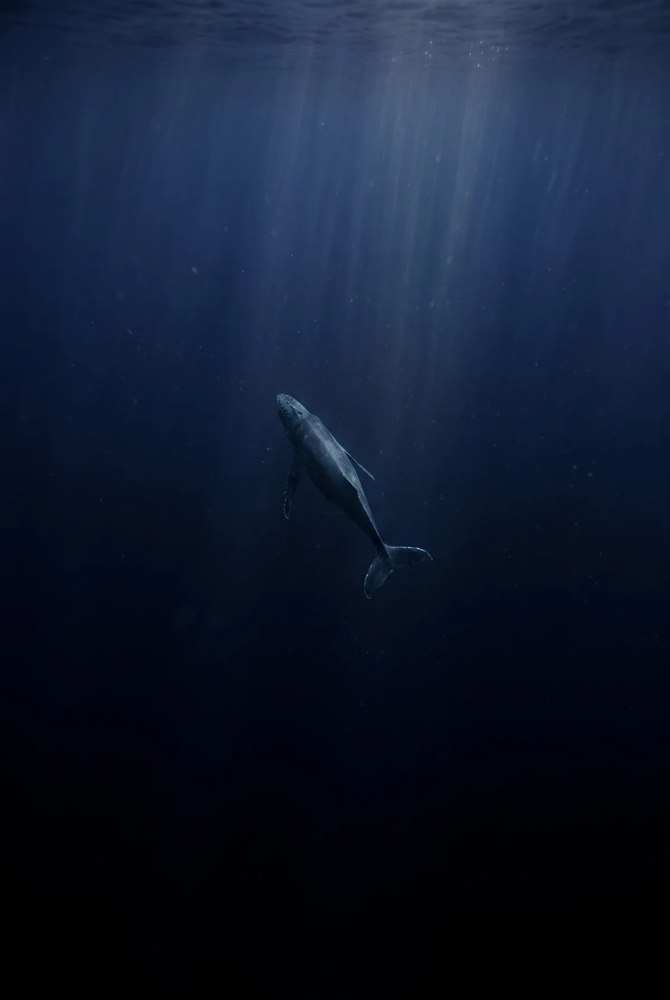
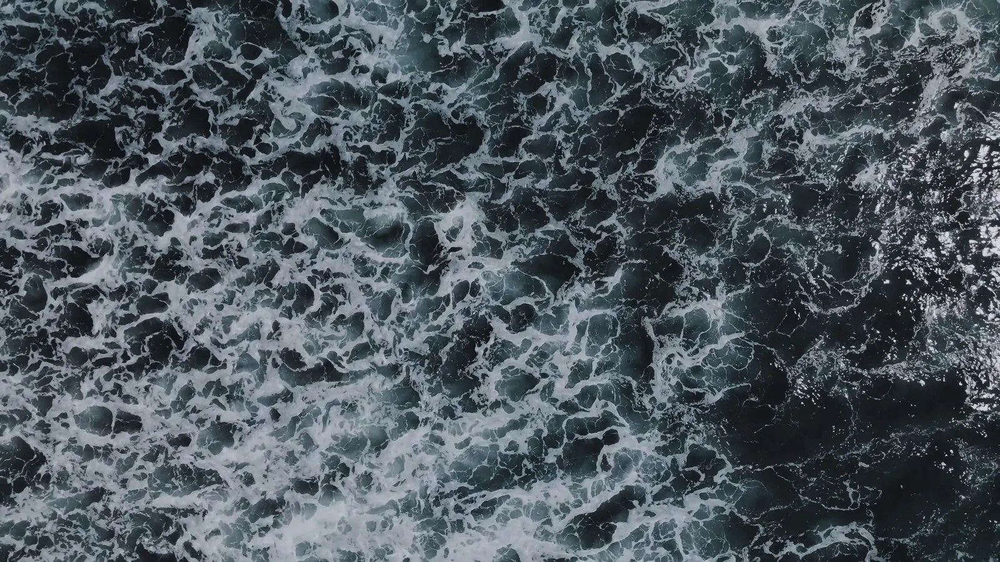
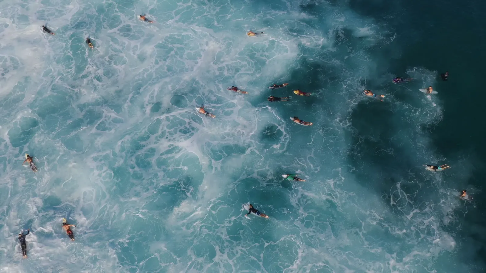
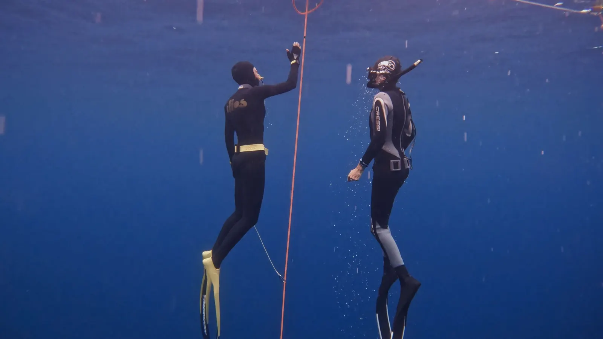
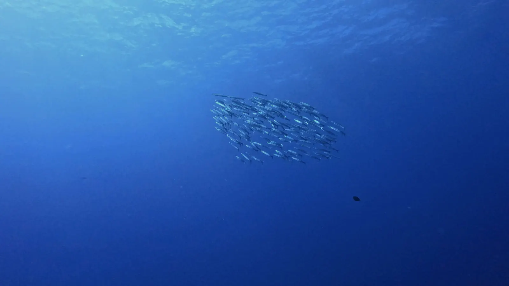
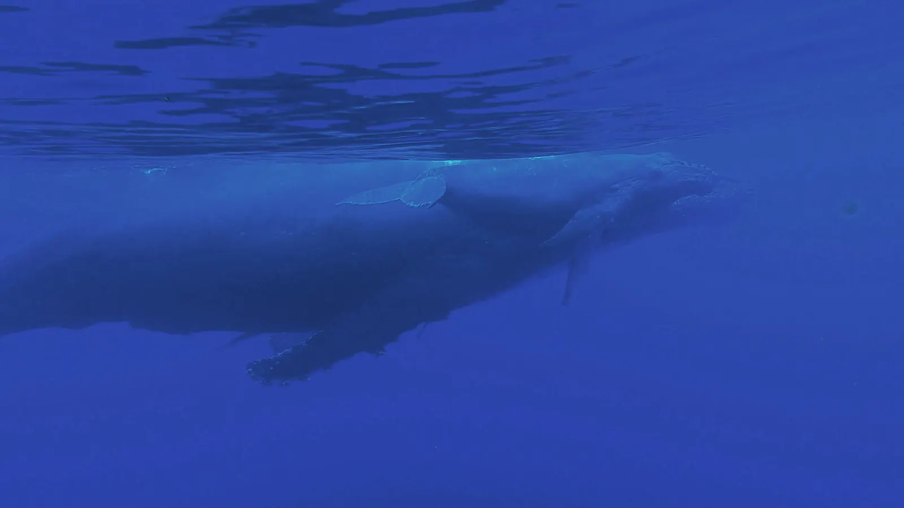
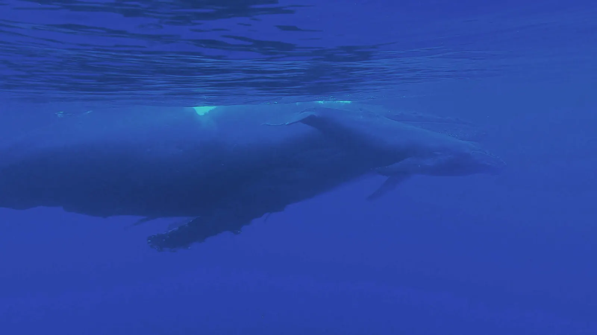
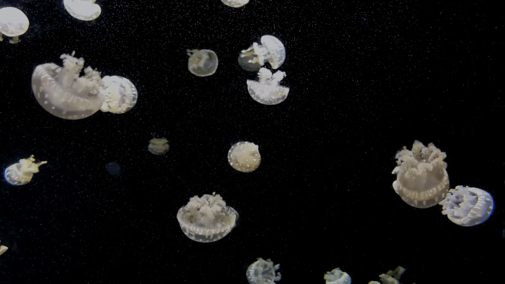
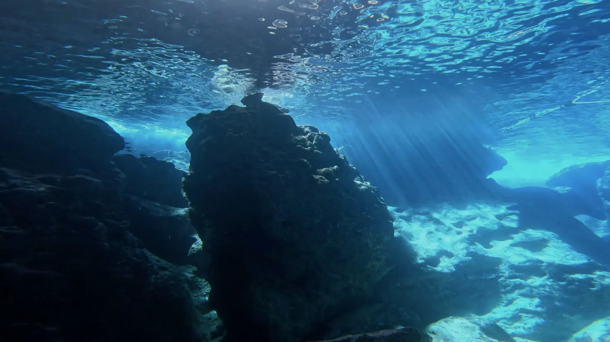

Pelagic Pictures presents
MIDWATER
A film about the ocean between the light and the floor.
Directed by Mara Voss.
Ardent Coast Film Festival Grand Jury Mention
Basalt Documentary Forum Audience Award
Meltwater Nonfiction Week
Synopsis
Between the sunlit surface and the ocean floor lies the largest habitat on Earth — and the least seen. MIDWATER follows a single descent through that vertical country: past the last swimmers, down the freedivers' line, through a cloud of ten thousand sardines, alongside a humpback mother teaching her calf to rise, and into the lantern town of the deep, where life makes its own light because the sun has never reached it.
Shot over four years in seven seas, with no narration and no score beyond the water's own, the film asks a small question at great pressure: what does the world look like in the place we were never meant to stay?
Director's statement
Mara Voss has spent eleven years filming below the surface. MIDWATER is her first feature.
We built the film the way a dive is built: one breath at the top, and everything after it borrowed. Every frame had a depth written on the slate, and we let that number direct us — what the light was doing, what the sound had thinned to, who was still moving.
The deep is usually filmed as a place of monsters. We found a town. Everyone there carries a lamp, pays for it in energy they cannot spare, and keeps it lit anyway. I wanted the audience to come back up the way divers do — slowly, and slightly changed by the pressure.
Stills








Notes from the survey
- DAY 112The sardine cloud held the camera inside itself for six minutes. The operator's only note: "they decided I was weather."
- DAY 407First contact with the mother and calf. We cut the engines and drifted for four hours; she closed the distance herself.
- DAY 623640 metres. Every light on the housing off. Two full minutes of black — then the town turned itself on.
- DAY 981Final ascent shot. The safety stop at five metres became the last scene of the film; nobody planned it.